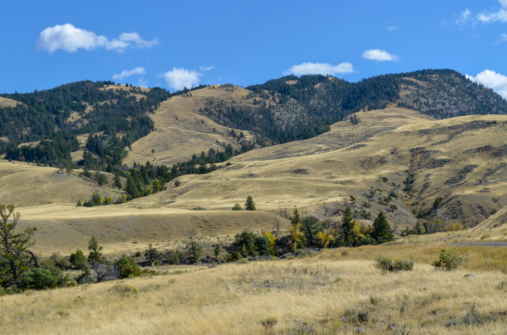
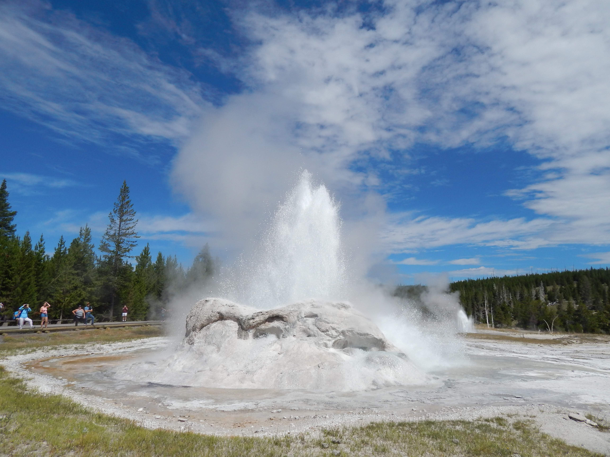

History
Yellowstone was established in 1872 in Montana, Wyoming, and Idaho as the world’s first national park…
Geology
The landscape of the Greater Yellowstone Ecosystem is the result of various geological processes over the last 150...
Wildlife
Yellowstone’s abundant and diverse wildlife are as famous as its geysers. There are nearly 300 species of birds…